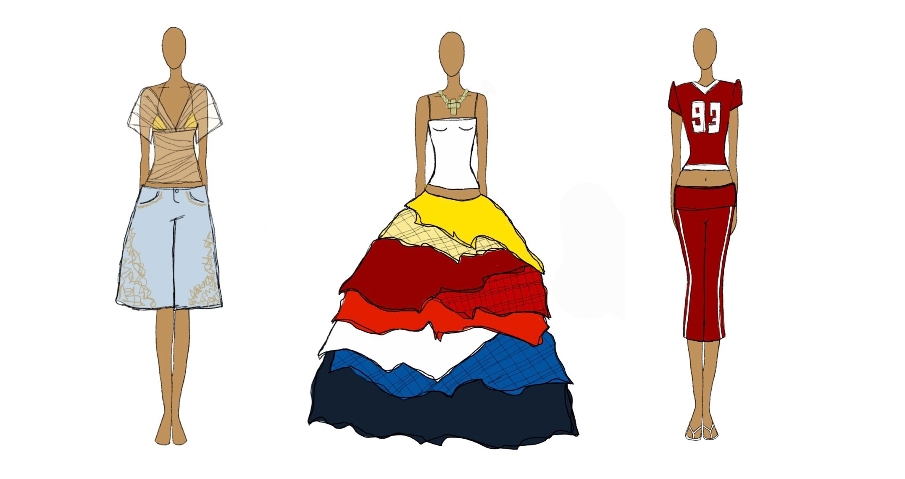
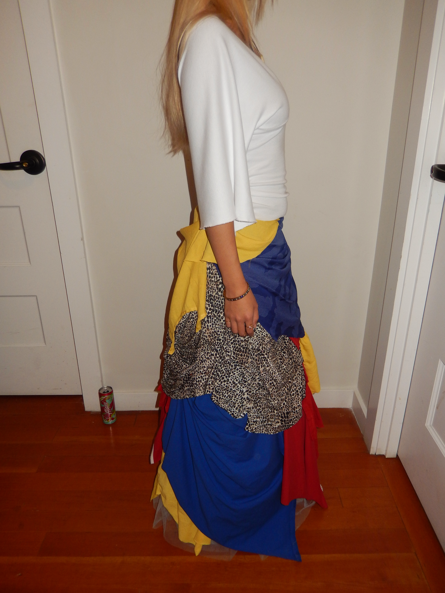
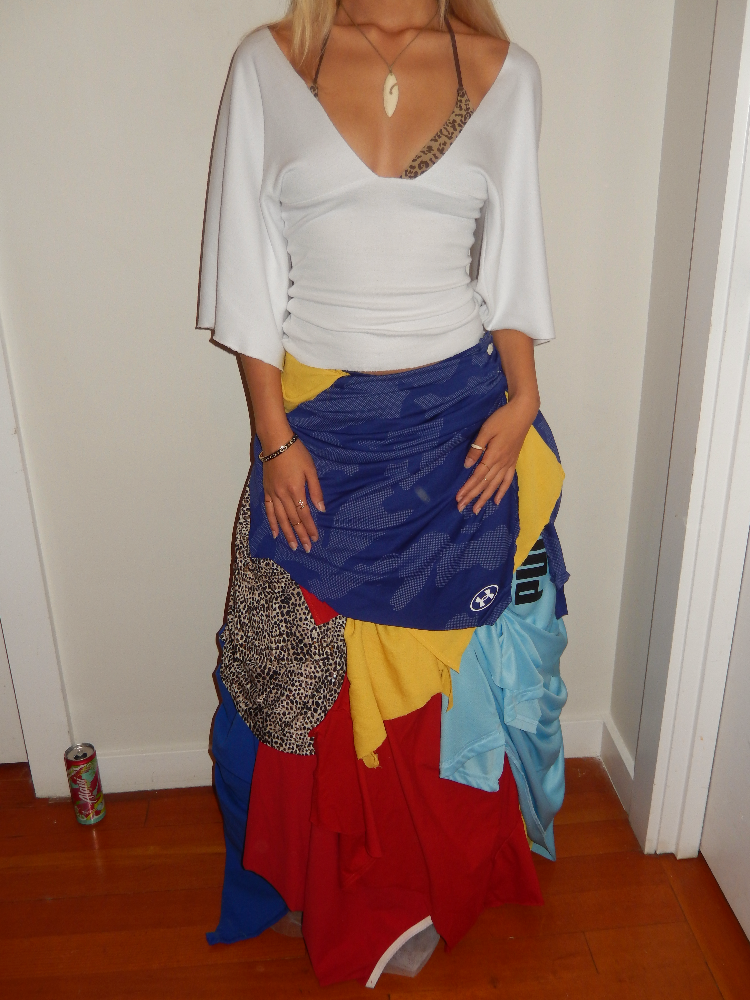
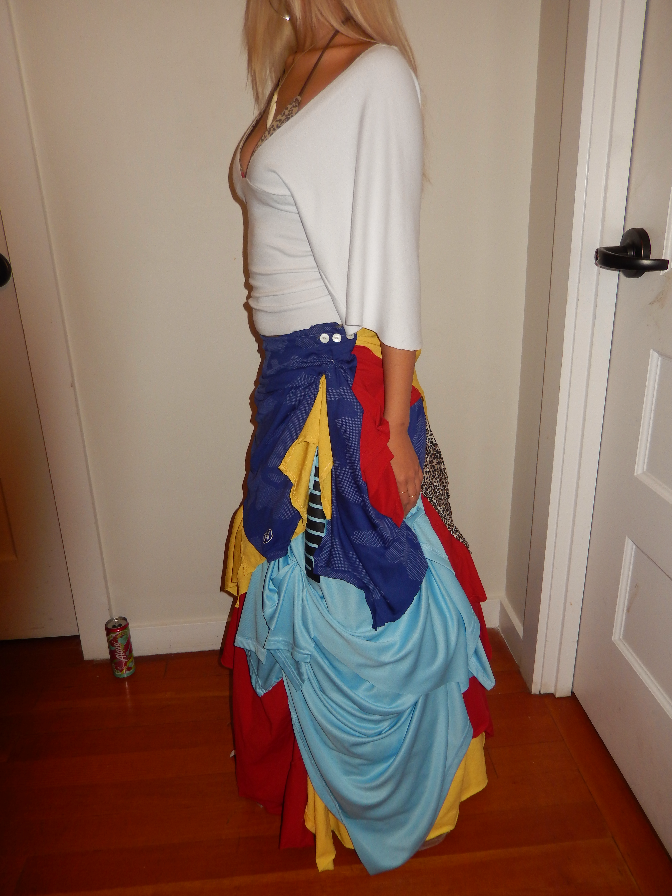
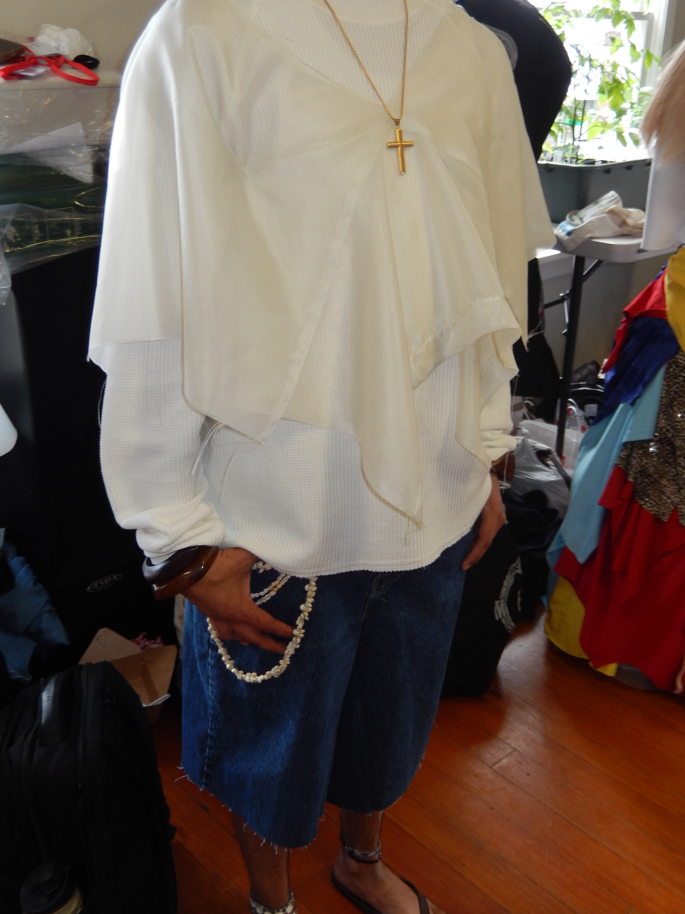
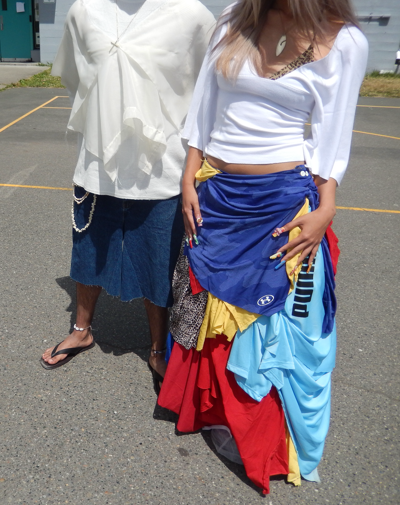
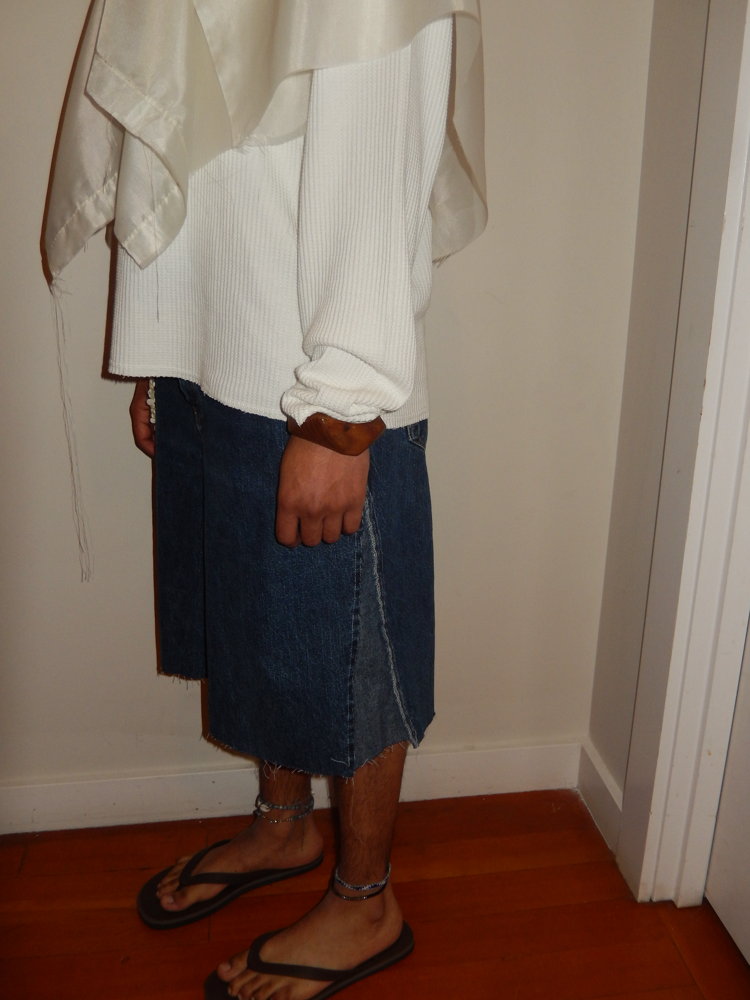
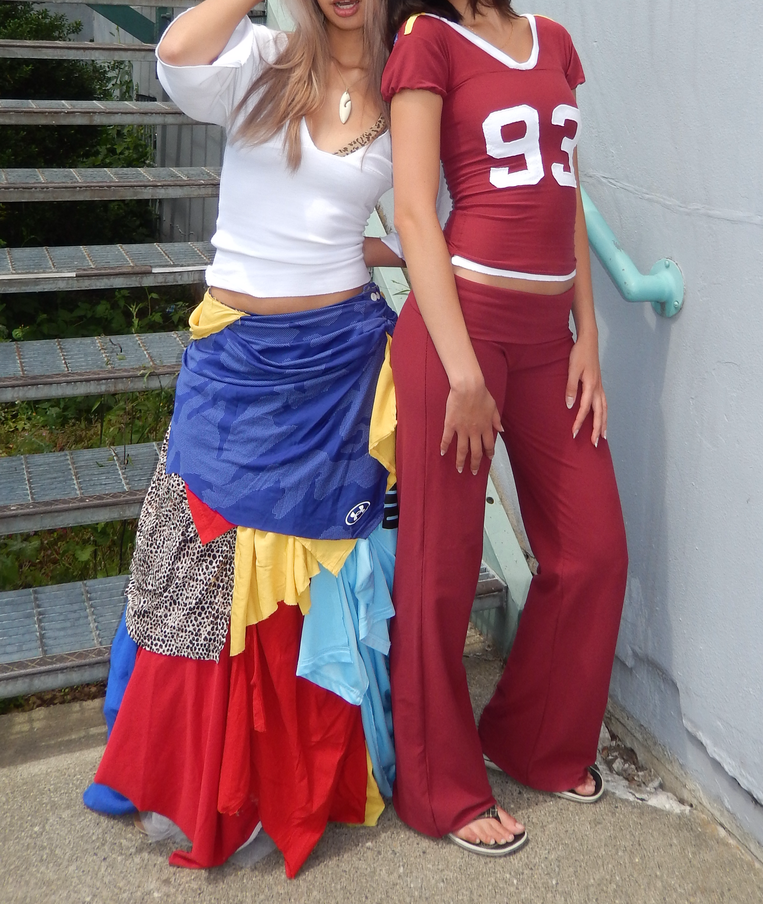
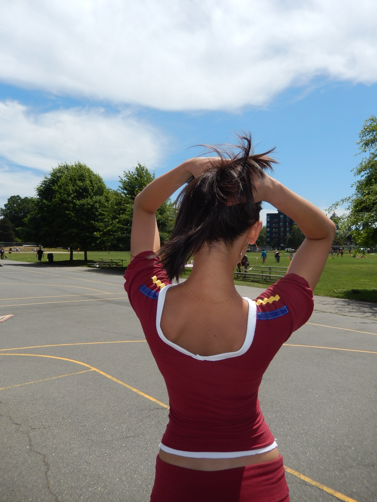

PILIPINA is my first collection. I created it as a way to honor migrant communities.
It is love, pride, community, and joyful rebellion. I took inspiration from traditional
Filipino pieces like barongs, filipinianas, and Sinulog festival dresses, as well as American streetwear.
I was also very inspired by Bad Bunny’s Super Bowl performance. The magnum opus of PILIPINA is the skirt
I made out of thrifted jerseys in the colors of the Philippine and Venezuelan flags. I am the person that I am
because of the communities that surround me.
“THE ONLY THING MORE POWERFUL THAN HATE IS LOVE”








